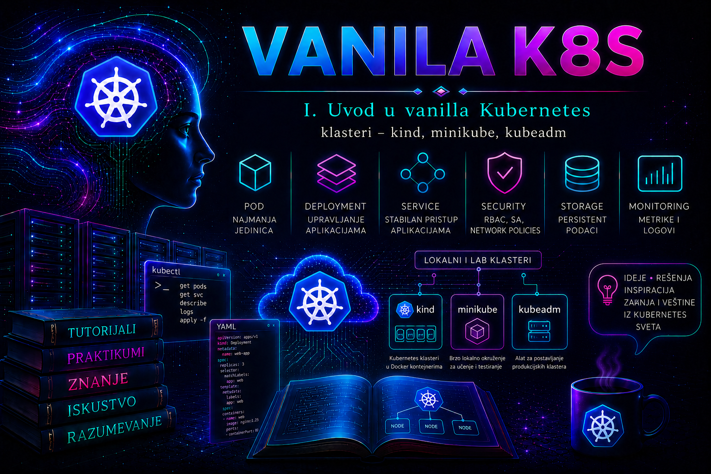

Vanilla Kubernetes

Učenje Kubernetes administracije zahteva okruženje u kojem administrator može bezbedno da kreira i uklanja klastere, menja konfiguraciju, izaziva kontrolisane kvarove, analizira događaje i logove i ponavlja postupke bez uticaja na produkcione servise. Takvo okruženje može biti kratkotrajan klaster čiji su čvorovi kontejneri, lokalni razvojni klaster u virtuelnoj mašini ili kontejneru, odnosno višemašinska laboratorija na unapred pripremljenim Linux čvorovima.
kind (Kubernetes IN Docker) i minikube rešavaju srodne, ali ne iste probleme. kind je naročito pogodan za brze, deklarativne i automatizovane klastere, uključujući CI testove. minikube objedinjuje lokalni životni ciklus klastera, profile, izbor drajvera, više čvorova i laboratorijske dodatke. kubeadm, koji se detaljno obrađuje u sledećoj lekciji, nije treća varijanta istog lokalnog omotača: on na već pripremljenim Linux čvorovima pokreće standardni bootstrap Kubernetes klastera, ali ne obezbeđuje virtuelne mašine, operativni sistem, load balancer, CNI, CSI, monitoring ni backup.
Izbor se zato ne pravi pitanjem „koji je alat najbolji”, već pitanjima: koju hipotezu proveravamo, koji sloj mora biti stvaran, koji kvar želimo da reprodukujemo i koji dokaz prihvatamo kao uspeh. Klaster koji savršeno proverava manifest i rollout može biti potpuno neadekvatan za test kvara fizičkog čvora, mrežne redundanse ili trajnog skladišta.
Namena lokalnog i laboratorijskog klastera
Lokalni klaster služi za obrazovanje, razvoj, proveru manifesta, testiranje verzija aplikacije i automatizovane integracione testove. On nije produkciono okruženje samo zato što izlaže isti Kubernetes API. Produkciona pouzdanost zavisi i od dostupnosti kontrolne ravni, quorum-a etcd-a, redundantne mreže, pouzdanog storage-a, kontrole pristupa, centralizovanog observability-ja, upravljanja sertifikatima, backup-a i dokazanih procedura oporavka.
Dobar lab omogućava i neuspeh: pogrešan kontekst, nedostupan worker, neispravan image tag, nedovoljni resursi, neuspešan readiness probe ili zauzet host port. Međutim, simulacija mora odgovarati cilju. Zaustavljanje kind kontejnera može pokazati ponašanje scheduler-a i kontrolera kada čvor postane nedostupan, ali ne dokazuje ponašanje nezavisnih napajanja, hipervizora ili mrežnih putanja.
Svaki ozbiljan laboratorijski test treba da ostavi zapis: verzije alata i Kubernetes-a, topologiju, početno stanje, konfiguraciju, izvršene promene, očekivani i stvarni rezultat, događaje i logove, poznata odstupanja i cleanup ili rollback. Najvredniji artefakti kratkotrajnog klastera nisu njegovi diskovi, već ponovljiva konfiguracija, manifesti, testovi i dokazi.
kind – Kubernetes čvorovi kao kontejneri
kind kreira jedan ili više „node” kontejnera. U njima se pokreću kubelet, containerd i Kubernetes komponente, dok kontejnerski sistem hosta obezbeđuje spoljašnji životni ciklus čvorova. Projekat je prvenstveno nastao za testiranje Kubernetes-a, ali je veoma koristan za lokalni razvoj i CI. Klaster se brzo kreira, proverava i uklanja, a konfiguracija se može čuvati uz izvorni kod testa.
Aktuelna zvanična dokumentacija navodi Docker, Podman i nerdctl kao moguće host alate, ali podrška i ponašanje nisu jednaki u svakoj kombinaciji operativnog sistema, rootless režima i mrežne konfiguracije. kind čvorovi interno koriste containerd; Podman podrška i rootless rad zahtevaju proveru aktuelnih ograničenja. Administrator pre izbora evidentira verzije kind i host runtime-a, cgroup režim, raspoložive resurse, slobodne portove i inotify limite.
kind version
docker version
docker info
free -h
df -h
sysctl fs.inotify.max_user_watches fs.inotify.max_user_instances
Sve komande su read-only. Ako se koristi Podman, odgovarajuće provere su podman version i podman info. Niski inotify limiti mogu naročito pogoditi veće lokalne klastere i ingress kontrolere; promena kernel parametara je host-wide promena i ne treba je praviti bez dokazanog simptoma i odobrenja vlasnika radne stanice.
Sledeća deklaracija opisuje jedan control plane i dva worker čvora. Host port 8080 mapira se na port 30080 control plane kontejnera, što omogućava kasniji laboratorijski NodePort test. Mapiranje se definiše pri kreiranju klastera; naknadna izmena zahteva ponovno kreiranje čvora odnosno klastera.
kind: Cluster
apiVersion: kind.x-k8s.io/v1alpha4
name: tashizza-kind
nodes:
- role: control-plane
extraPortMappings:
- containerPort: 30080
hostPort: 8080
listenAddress: "127.0.0.1"
protocol: TCP
- role: worker
- role: worker
Vezivanje za 127.0.0.1 ograničava izlaganje na lokalni host i bezbednije je od nenamernog slušanja na svim interfejsima. Višečvorni kind klaster ipak deli procesor, memoriju, disk, kernel i host runtime jedne mašine. On je odličan za raspoređivanje, rollout, API ponašanje i CI, ali nije dokaz infrastrukturne redundanse ni performansi produkcionog storage-a i mreže.
minikube – lokalno razvojno i obrazovno okruženje
minikube kreira lokalni Kubernetes klaster pomoću izabranog drajvera. Zavisno od host sistema i drajvera, čvor može biti VM, kontejner ili neposredno host okruženje. Profili predstavljaju međusobno odvojene minikube instance; više profila nije isto što i više čvorova u jednom klasteru. Za višečvorni klaster koristi se podržana multi-node mogućnost, uz proveru ograničenja konkretnog drajvera.
Pre starta ne treba naslepo prihvatiti automatski izabran drajver. VM drajver daje jaču izolaciju i realističniji gostujući sistem, ali troši više resursa. Kontejnerski drajver je brz, ali deli kernel hosta i može imati posebna ograničenja pristupa servisima, naročito na macOS-u, Windows-u i WSL-u. Drajver none menja Linux host uz povišena prava i ne treba ga koristiti na svakodnevnoj radnoj stanici; namenski VM ili drugi izolovani drajver je bezbedniji.
minikube version
minikube config view
minikube profile list
minikube start \
--profile tashizza-minikube \
--driver=docker \
--cpus=4 \
--memory=6144 \
--disk-size=30g
minikube status --profile tashizza-minikube
kubectl config current-context
kubectl get nodes -o wide
Komanda start menja stanje i kreira klaster; ostale prikazane komande čitaju stanje. Za veoma mali klaster mogu biti dovoljna dva CPU jezgra i približno 2 GB slobodne memorije, ali monitoring, ingress, više aplikacija i kontrolisani kvarovi realno zahtevaju više. Navedene vrednosti su laboratorijski budžet, ne univerzalni minimum.
Add-on mehanizam olakšava vežbe, ali jedna komanda ne zamenjuje razumevanje objekata, privilegija, portova i životnog ciklusa dodatka. Posebno je važno da podrazumevani host-path provisioner u višečvornom minikube klasteru ne predstavlja deljeno produkciono skladište; za testove koji zavise od pristupa volumenu sa različitih čvorova bira se odgovarajući CSI model i dokumentuju njegova ograničenja.
kubeadm – granica prema realističnoj višemašinskoj laboratoriji
kubeadm je ovde važan kao kriterijum izbora, dok se njegov bootstrap, endpoint kontrolne ravni i topologija detaljno obrađuju u lekciji 6. Ako cilj zahteva direktan rad sa systemd servisima, instalacijom containerd-a, kubelet journal-om, PKI materijalom, CNI instalacijom, kubeadm join procesom ili kvarom zasebne VM, kind i minikube više nisu dovoljan dokaz.
Referentna sledeća etapa može koristiti tri izolovane Linux VM: k8s-cp01 (10.20.30.11), k8s-wk01 (10.20.30.21) i k8s-wk02 (10.20.30.22). Pod CIDR 10.244.0.0/16 i Service CIDR 10.96.0.0/12 ne smeju se preklapati sa mrežom čvorova, VPN-om ili drugim rutiranim opsezima. Jedan control plane je prihvatljiv za učenje, ali nije visoko dostupan.
Za takvu laboratoriju unapred se pripremaju stabilna imena i adrese, sinhronizovano vreme, jedinstvena MAC/IP konfiguracija klonova, podržani Linux release, identične minor verzije Kubernetes paketa, odgovarajući container runtime, pravila komunikacije i snapshot čistih VM pre bootstrap-a. Snapshot je pomoć za reset laboratorije, ne zamena za backup produkcionog klastera.
Izbor odgovarajućeg alata
| Kriterijum | kind | minikube | kubeadm na VM/hostovima |
|---|---|---|---|
| Primarna namena | Brzi lokalni i CI testovi | Lokalni razvoj i učenje | Bootstrap realističnog klastera |
| Model čvorova | Kontejneri host runtime-a | VM, kontejner ili poseban Linux režim | Zasebni fizički ili virtuelni Linux čvorovi |
| Više čvorova | Jednostavno i deklarativno | Podržano uz odgovarajući drajver i resurse | Svaki čvor se priprema i pridružuje |
| systemd, kubelet i runtime na čvoru | Ograničeno i unutar node kontejnera | Zavisi od drajvera | Direktno dostupno na svakom čvoru |
| CI ponovljivost | Veoma visoka | Srednja do visoka | Zahteva dodatnu infrastrukturnu automatizaciju |
| Storage realizam | Lokalni/testni | Lokalni; multi-node zahteva poseban oprez | Zavisi od stvarnog CSI/storage dizajna |
| Kvar nezavisnog hosta | Ne simulira | Samo ako topologija zaista koristi odvojene hostove | Može se realno vežbati |
| Produkciona osnova | Ne | Ne | Može biti deo rešenja uz HA, mrežu, storage, bezbednost i operacije |
| Cleanup | Brz: brisanje klastera | Stop čuva stanje; delete uklanja profil | Reset plus infrastrukturni cleanup ili povratak snapshot-a |
Praktičan obrazovni redosled je: kind za ponovljiv API i CI scenario, minikube za profile, drajvere i lokalne dodatke, pa kubeadm na VM za operativni sloj čvora. Nije obavezno koristiti sva tri za svaku vežbu. Dobar administrator bira najmanje složeno okruženje koje verno predstavlja sloj pod testom.
Projektovanje praktičnog okruženja za učenje
- Izolacija: laboratorija nema kredencijale za produkcione registre, cloud naloge, vCenter, DNS ili mrežne uređaje; host portovi se izlažu samo koliko test zahteva.
- Kapacitet: unapred se određuje budžet CPU-a, memorije, diska, broja klastera i image cache-a. Paralelni lokalni klasteri mogu iscrpeti host i proizvesti lažne Kubernetes simptome.
- Verzije: beleže se verzije kind/minikube, Kubernetes node image-a, kubectl-a, runtime-a i dodataka. U julu 2026. podržane upstream minor grane su 1.36, 1.35 i 1.34; koristi se aktuelni patch odabrane podržane grane, ne neodređeno
latest. - Mreža: proveravaju se sukobi host portova, VPN ruta, proxy-ja, DNS-a i CIDR opsega. Dostupnost NodePort-a i LoadBalancer-a zavisi od drajvera i host operativnog sistema.
- Podaci: testni podaci su sintetički. Manifesti i dokazi čuvaju se izvan kratkotrajnog klastera; lokalni volume nije automatski prenosiv ni redundantan.
- Identitet: pre svake state-changing komande proveravaju se aktivni kontekst i namespace. Kubeconfig se štiti dozvolama i ne objavljuje.
- Ponovljivost: klaster mora moći da se napravi iz deklaracije i validira automatizovanim proverama. Ručna, nezabeležena intervencija je konfiguracioni drift.
Integrisani praktikum – isti workload na kind i minikube klasteru
Kontekst i cilj. Tim želi da utvrdi koje lokalno okruženje je pogodnije za ponovljive CI testove, a koje za interaktivnu obuku. Kreiraće se odvojeni kind i minikube klaster, primeniti isti workload, izvršiti funkcionalni i negativni test, prikupiti dokazi i bezbedno ukloniti okruženja.
Preduslovi i rizik. Potrebni su kubectl, kind, minikube i funkcionalan Docker drajver, najmanje 4 CPU jezgra, 8–12 GB slobodne memorije i dovoljno diska. Komande se izvršavaju kao običan lokalni korisnik koji ima odobren pristup runtime-u. Članstvo u Docker grupi praktično daje veoma visoka prava nad hostom; nije bezbednosno ekvivalentno običnom neprivilegovanom nalogu. Ne koristiti produkcioni kubeconfig niti port 8080 ako ga koristi drugi servis.
-
Sačuvati početno stanje i proveriti identitet alata.
mkdir -p "$PWD/lab-evidence" kind version | tee "$PWD/lab-evidence/kind-version.txt" minikube version | tee "$PWD/lab-evidence/minikube-version.txt" kubectl version --client -o yaml | tee "$PWD/lab-evidence/kubectl-version.yaml" docker version | tee "$PWD/lab-evidence/docker-version.txt" kubectl config get-contexts | tee "$PWD/lab-evidence/contexts-before.txt" ss -lnt | grep ':8080 ' || trueValidacija: svi alati vraćaju verziju, runtime je dostupan, a port 8080 nije zauzet. Ove komande ne menjaju klaster;
mkdirsamo kreira lokalni direktorijum za dokaze. -
Kreirati deklaraciju i kind klaster.
cat > "$PWD/kind-lab.yaml" <<'EOF' kind: Cluster apiVersion: kind.x-k8s.io/v1alpha4 name: tashizza-kind nodes: - role: control-plane extraPortMappings: - containerPort: 30080 hostPort: 8080 listenAddress: "127.0.0.1" protocol: TCP - role: worker - role: worker EOF kind create cluster --config "$PWD/kind-lab.yaml" --wait 120s kubectl config current-context kubectl get nodes -o wideOčekivani rezultat: kontekst je
kind-tashizza-kind, a tri čvora suReady. Ako kreiranje ne uspe, prvo se pregledaju host resursi, runtime ikind export logs; klaster se ne kreira naslepo preko delimičnog stanja. -
Kreirati minikube profil i potvrditi izolaciju konteksta.
minikube start \ --profile tashizza-minikube \ --driver=docker \ --nodes=2 \ --cpus=2 \ --memory=3072 \ --disk-size=20g minikube status --profile tashizza-minikube kubectl config get-contexts kubectl config current-context kubectl get nodes -o wideValidacija: aktivni kontekst pripada minikube profilu i oba čvora su
Ready. Vrednosti CPU-a i memorije primenjuju se po modelu koji implementira konkretan drajver; stvarnu alokaciju potvrditi izlazom čvorova i runtime-a, ne pretpostavkom. -
Napraviti zajednički manifest sa eksplicitnim resursima i health proverom.
apiVersion: v1 kind: Namespace metadata: name: lab-app --- apiVersion: apps/v1 kind: Deployment metadata: name: lab-web namespace: lab-app spec: replicas: 3 selector: matchLabels: app: lab-web template: metadata: labels: app: lab-web spec: topologySpreadConstraints: - maxSkew: 1 topologyKey: kubernetes.io/hostname whenUnsatisfiable: ScheduleAnyway labelSelector: matchLabels: app: lab-web containers: - name: web image: nginx:1.27-alpine ports: - name: http containerPort: 80 resources: requests: cpu: 50m memory: 32Mi limits: cpu: 200m memory: 128Mi readinessProbe: httpGet: path: / port: http initialDelaySeconds: 3 periodSeconds: 5 --- apiVersion: v1 kind: Service metadata: name: lab-web namespace: lab-app spec: type: NodePort selector: app: lab-web ports: - name: http port: 80 targetPort: http nodePort: 30080Manifest sačuvati kao
lab-web.yaml. Fiksni NodePort služi mapiranju u kind-u; pre produkcione primene ovakav izbor mora proći politiku portova i mrežnog izlaganja. -
Primeniti i validirati workload na kind-u.
kubectl config use-context kind-tashizza-kind kubectl diff -f "$PWD/lab-web.yaml" || test $? -eq 1 kubectl apply -f "$PWD/lab-web.yaml" kubectl rollout status deployment/lab-web -n lab-app --timeout=120s kubectl get pods,service,endpointslices -n lab-app -o wide curl -fsS http://127.0.0.1:8080/ >/dev/null curl -fsS http://127.0.0.1:8080/ -o "$PWD/lab-evidence/kind-http.html"Validacija: Deployment ima tri dostupne replike, Service ima spremne EndpointSlice adrese, a oba HTTP zahteva završavaju kodom 0.
kubectl diffkoristi izlazni kod 1 kada razlika postoji; prikazana zaštita prihvata samo očekivanu razliku, ne i druge greške. -
Primeniti isti workload na minikube-u i testirati pristup na način drajvera.
kubectl config use-context tashizza-minikube kubectl apply -f "$PWD/lab-web.yaml" kubectl rollout status deployment/lab-web -n lab-app --timeout=120s kubectl get pods,service,endpointslices -n lab-app -o wide minikube service lab-web \ --profile tashizza-minikube \ --namespace lab-app \ --urlValidacija: rollout je uspešan i komanda vraća URL. Na nekim host/drajver kombinacijama komanda održava tunel dok proces radi; URL se testira u drugom terminalu komandom
curl -fsS <URL>. Ne zaključivati da Node IP mora biti direktno rutabilan sa hosta. -
Izazvati bezbedan scheduler kvar i razlikovati ga od runtime kvara.
apiVersion: v1 kind: Pod metadata: name: lab-unschedulable namespace: lab-app spec: containers: - name: pause image: registry.k8s.io/pause:3.10 resources: requests: memory: 1000GiManifest sačuvati kao
lab-unschedulable.yaml, zatim primeniti na jednom od laboratorijskih konteksta:kubectl apply -f "$PWD/lab-unschedulable.yaml" kubectl get pod lab-unschedulable -n lab-app -o wide kubectl describe pod lab-unschedulable -n lab-app kubectl get events -n lab-app \ --field-selector involvedObject.name=lab-unschedulable \ --sort-by=.metadata.creationTimestamp kubectl delete pod lab-unschedulable -n lab-appOčekivani rezultat: Pod ostaje
Pending, nema dodeljen čvor, a događaj ukazuje na nedovoljnu memoriju. KodImagePullBackOffčvor je već izabran; to je druga grana dijagnostike. Brisanje testnog Poda je bezbedna korektivna akcija. -
Simulirati nedostupan kind worker i prikupiti dokaze pre korekcije.
Laboratorijsko upozorenje: sledeća komanda zaustavlja samo node kontejner tačno imenovanog kind klastera. Najpre potvrditi identitet.
kubectl config use-context kind-tashizza-kind docker ps --filter label=io.x-k8s.kind.cluster=tashizza-kind docker stop tashizza-kind-worker2 kubectl get nodes -wKada čvor postane
NotReady, prikupiti stanje i vratiti ga:kubectl describe node tashizza-kind-worker2 \ > "$PWD/lab-evidence/kind-worker2-notready.txt" kubectl get events -A --sort-by=.metadata.creationTimestamp \ > "$PWD/lab-evidence/kind-events.txt" docker start tashizza-kind-worker2 kubectl wait --for=condition=Ready node/tashizza-kind-worker2 --timeout=180s kubectl get pods -n lab-app -o wideTumačenje: simptom je
NotReady; neposredni uzrok je zaustavljen node kontejner; osnovni uzrok je namerna laboratorijska promena. Privremeno rešenje i rollback su ponovno pokretanje istog kontejnera. Test ne dokazuje HA fizičke infrastrukture. -
Prikupiti završne dokaze i izvršiti cleanup.
for context in kind-tashizza-kind tashizza-minikube; do kubectl --context "$context" get nodes -o wide \ > "$PWD/lab-evidence/${context}-nodes.txt" kubectl --context "$context" get pods -A -o wide \ > "$PWD/lab-evidence/${context}-pods.txt" done tar -czf "$PWD/tashizza-local-lab-evidence.tar.gz" lab-evidence sha256sum "$PWD/tashizza-local-lab-evidence.tar.gz" kind delete cluster --name tashizza-kind minikube delete --profile tashizza-minikube kubectl config get-contextsKriterijum završetka: arhiva i kontrolna suma postoje; oba laboratorijska klastera su uklonjena; njihovi konteksti više nisu aktivni. Pre brisanja mora se potvrditi da u klasterima nema jedine kopije manifesta, slika ili testnih podataka. Ako se vežba nastavlja kasnije,
minikube stop --profile tashizza-minikubečuva stanje i nije isto što idelete.
Logovi i razlikovanje tipičnih problema
| Simptom | Prvi dokaz | Verovatni sloj | Bezbedna sledeća provera |
|---|---|---|---|
| Klaster se ne kreira | kind/minikube izlaz i verzije | Host resursi, runtime, drajver, port | docker info, slobodan disk, zauzeti portovi; zatim kind export logs ili minikube logs |
Pod je Pending bez čvora | kubectl describe pod i Events | Scheduler, resursi, affinity/taints | Uporediti zahteve Poda sa allocatable resursima i pravilima raspoređivanja |
ContainerCreating | Pod Events | CNI, volume, sandbox ili runtime | Pregled događaja, node stanja i runtime/CNI logova |
ImagePullBackOff | Pod Events | Ime slike, registry, mreža ili autentikacija | Proveriti puni image reference, registry pristup i imagePullSecret bez ispisivanja tajne |
CrashLoopBackOff | kubectl logs --previous | Aplikacioni proces ili konfiguracija | Uporediti exit code, probe, argumente i prethodne logove |
Čvor je NotReady | kubectl describe node | Kubelet, runtime, CNI ili host | Utvrditi da li je node kontejner/VM aktivan; zatim ciljano pregledati logove |
| Service nema odgovor | Service i EndpointSlice | Selector, readiness, mreža ili način izlaganja | Najpre test unutar klastera, zatim driver-specifičan host pristup |
kubectl describe pod <POD> -n <NAMESPACE>
kubectl logs <POD> -n <NAMESPACE> --all-containers
kubectl logs <POD> -n <NAMESPACE> --previous
kubectl describe node <NODE>
kubectl get events -A --sort-by=.metadata.creationTimestamp
kind export logs "$PWD/kind-logs" --name tashizza-kind
minikube logs --profile tashizza-minikube --last-start-onlyRedosled je važan: potvrditi aktivni kontekst, obim i vreme incidenta; prikupiti događaje i stanje; postaviti hipotezu; tek zatim menjati stanje. Nasumični restart svih komponenti uništava dokaze i može privremeno sakriti osnovni uzrok. Normalno stanje nije odsustvo svih upozorenja: kratki događaji tokom bootstrap-a i image pull-a mogu biti očekivani, ali trajanje izvan kriterijuma, rast restartovanja ili gubitak funkcije zahteva reakciju.
Rollback i cleanup laboratorije
Aplikacioni rollback i uklanjanje klastera nisu isto. Manifest se uklanja komandom kubectl delete -f lab-web.yaml; kind klaster komandom kind delete cluster --name tashizza-kind; minikube profil komandom minikube delete --profile tashizza-minikube. minikube stop samo zaustavlja VM ili kontejner i čuva stanje za kasniji start.
Ručno brisanje runtime volumena, mreža ili celog image cache-a nije standardni prvi cleanup. Takve host-wide komande mogu pogoditi druge projekte. Ako deklarativno brisanje ne uspe, najpre se potvrđuju vlasništvo objekata, label-e klastera i preostali procesi, a zatim se primenjuje ciljano dokumentovan postupak iz troubleshooting reference konkretnog alata.
Za buduću kubeadm VM laboratoriju bezbedniji povratak često je provereni snapshot napravljen pre kubeadm init. kubeadm reset jeste destruktivna čvorovska operacija i ne mora ukloniti sve CNI interfejse, firewall pravila, kubeconfig datoteke ili storage podatke; njegov kompletan postupak pripada narednoj lekciji.
Administratorske prakse
- Biraj okruženje prema dokazu. Manifest i API test ne zahtevaju tri VM; kvar nezavisnog čvora i systemd dijagnostika zahtevaju realističniji sloj.
- Verzioniši konfiguraciju. kind konfiguracije, manifesti, verzije alata i test skripte pripadaju kontrolisanom repozitorijumu; tokeni i kubeconfig kredencijali ne pripadaju.
- Proveri kontekst pre promene. Koristi
kubectl config current-contextili eksplicitni--context. Nazivi lab klastera moraju biti jasno različiti od produkcionih. - Ograniči izlaganje. Host portove veži za loopback kad spoljni pristup nije potreban; ne uključuj dodatke i tunele bez razumevanja pravila koja stvaraju.
- Prati kapacitet hosta. Pre paralelnog rada proveri RAM, disk, CPU, inotify i runtime cache. Ne briši slike i volumene bez potvrde vlasništva.
- Prikupi dokaz pre restarta. Sačuvaj stanje, događaje i logove za relevantan vremenski period; korekcija mora potvrditi ili odbaciti postavljenu hipotezu.
- Odvoji stop, delete i rollback. Zaustavljanje čuva stanje; delete uklanja klaster; rollback vraća poznatu verziju konfiguracije ili snapshot. Svaka radnja ima različit cilj i rizik.
- Ponovo kreiraj laboratoriju periodično. Uspeh nije „još radi”, već mogućnost da drugi administrator od čistog stanja dobije isti rezultat i dokaze.
Završna kontrolna tačka
- Umeš da obrazložiš kada kind, minikube ili kubeadm VM laboratorija daju valjan dokaz, a kada ne.
- Razlikuješ više minikube profila od više čvorova jednog klastera.
- Možeš deklarativno kreirati višečvorni kind klaster i bezbedno izložiti testni NodePort samo na loopback adresi.
- Možeš kreirati minikube profil sa eksplicitnim drajverom i resursima i validirati aktivni kontekst.
- Isti manifest uspešno primenjuješ i funkcionalno proveravaš na oba lokalna okruženja.
- Događajima dokazuješ zašto Pod ostaje
Pendingi razlikuješ scheduler, image pull i crash simptom. - Kontrolisano simuliraš i vraćaš nedostupan kind worker bez tvrdnje da je time dokazana infrastrukturna HA.
- Prikupljaš verzije, stanje, događaje i logove pre promene i čuvaš arhivu sa kontrolnom sumom.
- Razlikuješ aplikacioni cleanup,
minikube stop, brisanje klastera i infrastrukturni rollback. - Možeš da definišeš preduslove za sledeću kubeadm laboratoriju bez prerane improvizacije na produkcionoj infrastrukturi.
Zaključak
Lokalni i laboratorijski klasteri nisu umanjena produkcija, već instrumenti za različite vrste dokaza. kind pruža brz, deklarativan i automatizaciji pogodan klaster sa kontejnerskim čvorovima. minikube pruža bogato lokalno razvojno okruženje sa profilima, drajverima, multi-node mogućnošću i laboratorijskim dodacima. kubeadm na zasebnim čvorovima postaje pravi izbor tek kada cilj zahteva operativni sloj Linux hosta, kubeleta, runtime-a, PKI-ja, CNI-ja i topologije kontrolne ravni.
Ključna administratorska veština nije samo pokretanje komande, već pravilno određivanje granice zaključka. Uspešan rollout u kind-u dokazuje ponašanje Kubernetes objekata u tom testu; ne dokazuje redundantnu mrežu, enterprise storage ni oporavak od fizičkog kvara. Uspešan minikube add-on dokazuje funkcionalnost lokalne implementacije; ne predstavlja automatski odobren produkcioni dizajn.
Posle ove lekcije čitalac ume da izabere okruženje, dokumentuje početno stanje, podigne dva različita lokalna klastera, primeni isti workload, proveri saobraćaj, izazove bezbedan kvar, dijagnostikuje ga dokazima i izvrši kontrolisan cleanup. Time je pripremljen za lekciju 6, u kojoj lokalna pogodnost ustupa mesto eksplicitnoj odgovornosti za kubeadm bootstrap i topologiju klastera.